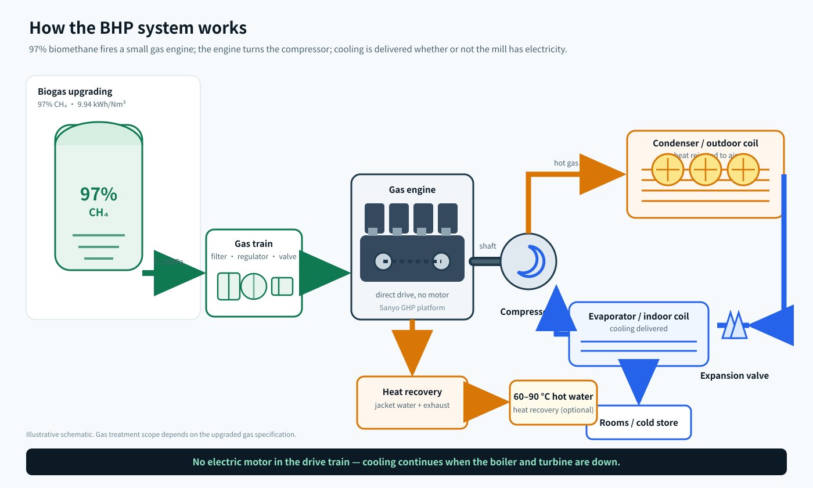

01 · Seni bina terbukti
Enjin, bukan penyerapan
Pemampatan mekanikal memberi kira-kira 1.5× penyejukan berbanding penyejuk penyerapan satu kesan pada input gas yang sama, tanpa litium bromida, tanpa gelung kakisan dan tanpa risiko penghabluran.
Pam Haba Biogas (BHP) · 30–480 kW
Penyaman udara kilang biasanya bergantung pada satu tulang belakang: dandang, turbin stim, grid kilang, penyejuk elektrik. Hentikan dandang dan pejabat, makmal serta perumahan pekerja menjadi panas — tepat ketika kilang paling memerlukannya. Sistem BHP memutuskan kebergantungan itu. Enjin gas kecil memacu pemampat secara terus, dan bahan apinya biometana 97% daripada biogas kilang sendiri. Tiada motor elektrik dalam pemacu, tiada sambungan grid dan tiada diesel.
Titik kegagalan tunggal
Inilah rantaian yang menentukan sama ada kilang mempunyai penyaman udara pada hari tertentu. Setiap pautan bergantung secara elektrik atau terma pada pautan sebelumnya.
Rantaian BHP

Unit
Enjin, pemampat, pemeluwap, kereta gas, bateri pemula dan pengawal tiba pada satu skid, diuji di kilang. Letakkan di atas tapak, sambung garis gas, garis air sejuk atau refrigeran dan satu kabel kawalan. Tiada pusat kawalan motor, tiada pemula lembut, tiada naik taraf transformer.
Cara ia berfungsi
Enjin melakukan kerja mekanikal pada pemampat — ia bukan penyejuk penyerapan. Sebab itu satu Nm³ metana memberi kira-kira 10 kWh penyejukan, kira-kira 1.5 kali lebih daripada penyejuk penyerapan satu kesan dengan gas yang sama.

COP di sini adalah atas LHV bahan api, cara pam haba gas dinilai di Jepun. Atas asas setara elektrik, pemampat itu sendiri beroperasi pada COP kira-kira 3.0 — sama seperti penyejuk elektrik yang baik; yang berubah ialah dari mana kuasa aci datang.
Asal teknologi
Pam haba enjin gas dibangunkan dan diindustrikan oleh bahagian penyaman udara Sanyo di Jepun. Mesin kelas yang sama dibina di China oleh Dalian Sino-Tech Precision (Sino-Tech). BHP mengambil seni bina mekanikal yang terbukti itu — enjin gas, pemampat pemacu terbuka, pemulihan haba enjin — dan menyesuaikan sistem bahan api kepada biometana 97% daripada sisa kilang kelapa sawit.
01 · Seni bina terbukti
Pemampatan mekanikal memberi kira-kira 1.5× penyejukan berbanding penyejuk penyerapan satu kesan pada input gas yang sama, tanpa litium bromida, tanpa gelung kakisan dan tanpa risiko penghabluran.
02 · Apa yang kami ubah
Kereta gas disaiz untuk 97% metana, nisbah udara/bahan api dan pemasaan pencucuhan dipetakan semula, kawalan ketukan dan penurunan kuasa untuk variasi nombor metana, minyak dan selang servis serasi biogas.
03 · Apa yang kekal
Enjin salingan industri, pemampat pemacu terbuka, gegelung tiub tembaga bersirip aluminium, akses servis dari hadapan. Baik pulih pada 20,000–30,000 j; hayat reka bentuk 15 tahun.
Mesin rujukan kelas ini termasuk unit luar Panasonic GHP dan pakej pam haba enjin gas Dalian Sino-Tech Precision (Sino-Tech). BHP ialah pakej kami yang disesuaikan untuk biogas; angka prestasi di halaman ini adalah indikatif dan disahkan dengan helaian jaminan pengeluar bagi setiap projek.
Julat
Input bahan api pada penyejukan terkadar, COP 1.0 atas LHV metana. Air panas ialah haba enjin boleh pulih pada kenaikan 50 K (20 → 70 °C), mod penyejukan. Unit selari untuk beban lebih besar.
| Model | Penyejukan (kW) | Input bahan api (kW) | 97% CH₄ (Nm³/j) | Haba boleh pulih (kW) | Air panas 50 K (L/j) |
|---|---|---|---|---|---|
| BHP-30 | 30 | 30.0 | 3.0 | 7.5 | 129 |
| BHP-60 | 60 | 60.0 | 6.0 | 15.0 | 258 |
| BHP-120 | 120 | 120.0 | 12.1 | 30.0 | 517 |
| BHP-240 | 240 | 240.0 | 24.1 | 60.0 | 1,033 |
| BHP-480 | 480 | 480.0 | 48.3 | 120.0 | 2,067 |
Asas: LHV metana 9.94 kWh/Nm³; COP penyejukan 1.0 atas LHV bahan api (lazim kelas ini, 0.95–1.15 bergantung pada ambien dan beban separa); 25% input bahan api boleh pulih sebagai air panas dalam mod penyejukan. Sahkan dengan helaian jaminan model sebelum membeli.
Ekonomi
Bagi 100 kW penyejukan, 8,000 jam setahun. Lajur BHP menganggap kilang meningkatkan biogas sendiri pada RM 0.60/Nm³; jika biogas mentah boleh digunakan terus, kos bahan api turun, tetapi penurunan kuasa enjin dan selang servis lebih pendek mesti diambil kira.
| Pilihan | Penyejukan setahun (kWh) | Bahan api setahun | Kos bahan api (RM/tahun) | Penyelenggaraan (RM/tahun) | RM per kWh penyejukan | Berfungsi tanpa grid? |
|---|---|---|---|---|---|---|
| BHP | 800,000 | 80,500 Nm³ CH₄ | 48,300 | 7,500 | 0.070 | Ya |
| Genset diesel + penghawa elektrik | 800,000 | 83,300 L diesel | 179,100 | 12,000 | 0.239 | Ya, selagi bahan api ada |
| Grid + penghawa elektrik | 800,000 | 266,700 kWh | 120,000 | 8,000 | 0.160 | Tidak |
Andaian: penghawa elektrik COP 3.0; genset diesel 3.2 kWh seliter pada RM 2.15/L; tarif grid RM 0.45/kWh; BHP COP penyejukan 1.0 dan biogas ditingkatkan RM 0.60/Nm³. Indikatif sahaja.
Contoh kiraan · 120 kW
Unit BHP 120 kW menanggung beban pejabat dan makmal. Berbanding elektrik dari diesel, ia menjimatkan kira-kira RM 162,000 setahun. Pada RM 2,500/kW indikatif untuk peralatan, pulang modal kira-kira 1.8 tahun — sebelum sebarang geran atau kredit karbon.
Bila ia bukan jawapan
Jika kilang mempunyai kuasa grid kukuh pada RM 0.35–0.45/kWh dan dandang tidak pernah berhenti, sistem VRF elektrik lebih murah untuk dibeli dan dikendalikan. BHP berbaloi bila grid tiada atau tidak boleh diharap, bila turbin berhenti, atau bila diesel ialah bahan api penyejukan hari ini.
Skop & terma
| Termasuk | Enjin, pemampat, pemeluwap, penyejat/unit dalam, kereta gas, bateri pemula, pengawal, penukar pemulihan haba, ujian kilang |
| Pilihan | Pemulihan haba air panas, pemantauan jauh, kanopi akustik, kit alat ganti, kontrak O&M |
| Tidak termasuk | Loji peningkatan biogas, kerja awam dan asas, paip gas ke unit, paip air sejuk, agihan elektrik, permit, tambang dan SST |
| Spesifikasi bahan api | CH₄ ≥ 95%, H₂S < 10 ppm, siloksan < 5 mg/Nm³, takat embun ≤ 5 °C, 5–20 kPa di masuk unit |
| Selang servis | Minyak dan palam setiap 2,000 j; baik pulih atas 10,000 j; baik pulih besar 20,000–30,000 j |
| Masa penghantaran | 4–6 bulan dari pesanan dan analisis gas |
Apa kami perlukan untuk saiz
Kami balas dengan pemilihan unit, spesifikasi gas dan bajet indikatif dalam tiga hari bekerja.
Semua angka adalah anggaran kejuruteraan indikatif untuk pra-kelayakan. Sebut harga rasmi memerlukan analisis gas, beban penyejukan dan tinjauan tapak.